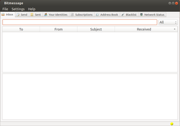

Bitmessage
Dieser Artikel wurde für die folgenden Ubuntu-Versionen getestet:
Ubuntu 14.04 Trusty Tahr
Zum Verständnis dieses Artikels sind folgende Seiten hilfreich:
Bitmessage  ist ein seit 2012 entwickeltes System zum verschlüsselten Nachrichtenaustausch. Es zeichnet sich gegenüber E-Mail dadurch aus, ohne zentrale Server auszukommen und verwendet als Transportmedium ein geschlossenes Peer-to-Peer-Netzwerk (P2P). Man kann und muss also kein Postfach bei einem E-Mail-Provider eröffnen. Im Gegensatz zu E-Mails werden alle Nachrichten grundsätzlich verschlüsselt und können nicht von Dritten gelesen werden.
ist ein seit 2012 entwickeltes System zum verschlüsselten Nachrichtenaustausch. Es zeichnet sich gegenüber E-Mail dadurch aus, ohne zentrale Server auszukommen und verwendet als Transportmedium ein geschlossenes Peer-to-Peer-Netzwerk (P2P). Man kann und muss also kein Postfach bei einem E-Mail-Provider eröffnen. Im Gegensatz zu E-Mails werden alle Nachrichten grundsätzlich verschlüsselt und können nicht von Dritten gelesen werden.
Bitmessage basiert auf den Ideen des Protokolls von Bitcoin. Da der Nachrichtentransport ohne zentrale Server abgewickelt wird, erhält faktisch jeder Teilnehmer alle Nachrichten des Systems, aber nur der korrekte Empfänger kann diese entschlüsseln und damit lesen. Da keine Mailheader vorhanden sind, entfallen auch Information über den Transportweg, die selbst bei verschlüsselten E-Mails indirekt Rückschlüsse auf die Kommunikationspartner zulassen. Detaillierte Informationen zu Authentifizierung, Skalierbarkeit und Spam finden sich im Whitepaper  (PDF).
(PDF).
Hinweis:
Es sollte beachtet werden, dass Bitmessage noch ein junges Projekt ist und bisher keinen Sicherheitsaudit durchlaufen hat.
Installation¶
|  |
| PyBitmessage |
Der unter Linux gebräuchliche Client hört auf den Namen PyBitmessage. Das englischsprachige Programm ist bisher kein Bestandteil der offiziellen Paketquellen.
Manuell¶
Zunächst müssen folgende Pakete installiert werden, um die Abhängigkeiten aufzulösen [1]:
python
openssl
git
python-qt4
 mit apturl
mit apturl
Paketliste zum Kopieren:
sudo apt-get install python openssl git python-qt4
sudo aptitude install python openssl git python-qt4
Dann wird in einem Terminalfenster [2] Bitmessage via Git ins Homeverzeichnis heruntergeladen:
git clone https://github.com/Bitmessage/PyBitmessage $HOME/PyBitmessage
Erscheint eine neue Version, ist dieser Befehl zu wiederholen. Das Programm kann anschließend wie folgt gestartet werden:
python2 ~/PyBitmessage/src/bitmessagemain.py
Wer möchte, kann sich einen Programmstarter [3] erstellen. Dazu erstellt man die Datei ~/.local/share/applications/pybitmessage.desktop mit folgendem Inhalt (BENUTZERNAME bitte anpassen):
[Desktop Entry] Type=Application Name=PyBitmessage GenericName=Bitmessage secure E-Mail client Comment=Send encrypted messages Comment[de]=Verschlüsselte Nachrichten senden und empfangen Exec=sh -c 'cd /home/BENUTZERNAME/PyBitmessage/src/ && python bitmessagemain.py' Icon=/home/BENUTZERNAME/PyBitmessage/desktop/icon24.png Terminal=false X-MultipleArgs=false Categories=Application;Network;Email; StartupNotify=true Actions=Launch [Desktop Action Launch] Name=Launch Bitmessage Exec=sh -c 'cd /home/BENUTZERNAME/PyBitmessage/src/ && python bitmessagemain.py' OnlyShowIn=Messaging Menu;Unity;
Bedienung¶
Nach dem Programmstart legt man sich als erstes über "Your Identities" ein oder mehrere Benutzerkonten an. Dabei stehen zwei Verfahren zur Auswahl:
Zufällig (Random number generator)
Kennwort (Passphrase)
Beide Verfahren haben sowohl Vor- als auch Nachteile, die bei der Kontenerstellung genauer erklärt werden. Die weitere Bedienung funktioniert wie bei E-Mails: Nachrichten werden unter Angabe von Absender, Empfänger und Betreff ausgetauscht. Die grundlegenden Funktionen von Bitmessage sind über Registerkarten (Tabs) zu finden:
| Titel der Tabelle | |
| Registerkarte | Funktion |
 Inbox Inbox | Im Posteingang finden sich alle eingegangenen Nachrichten |
| Send | Verfassen einer Nachricht |
| Sent | Gesendete Nachrichten |
| Your Identities | Hier können beliebig viele Benutzerkonten/Adressen zum Versenden und Empfangen von Nachrichten erstellt werden |
| Subscriptions | An dieser Stelle abonniert man Rundsprüche. Diese Nachrichten erscheinen automatisch im Posteingang. |
| Address Book | Im Adressbuch können den schwierig zu merkenden Adressen Namen zugewiesen werden |
| Blacklist | Festlegen unerwünschter Adressen |
| Network Status | Zeigt die Konnektivität zum P2P-Netzwerk |
Zum Testen kann eine Nachricht an die Adresse BM-orkCbppXWSqPpAxnz6jnfTZ2djb5pJKDb gesendet werden. Es wird automatisch eine Nachricht an den Absender zurückgeschickt.
Hinweis:
Solange der Sender einer Nachricht Bitmessage betreibt und der Empfänger offline ist, werden neue Zustellversuche unternommen, bis die Nachricht den Empfänger erreicht. Ist der Empfänger länger als 2 Tage offline, werden Nachrichten verzögert (nach 5, 10, 20... Tagen) zugestellt, um das dezentrale Netz nicht zu überlasten (Stand: 05/2014).
Einstellungen¶
Über den Menüpunkt "Settings" kann u.a. festgelegt werden, ob Bitmessage beim Systemstart automatisch gestartet werden soll. Einstellungen werden im Ordner ~/.config/PyBitmessage/ im Homeverzeichnis gespeichert.
Problembehebung¶
Bitmessage zeigt seine Funktionstüchtigkeit mit einem Symbol unten rechts im Programmfenster an, das in Ampelfarben erscheint. Wenn dieses Symbol rot ist, besteht keine Verbindung zum Netzwerk. Es ist immer ratsam, den TCP-Port 8444 weiterzuleiten. Das hilft außerdem dem gesamten Bitmessage-Netzwerk.
Links¶
Compiling instructions
- Bitmessage aus dem Quelltext kompilierenForum
mit deutschsprachiger SektionBitmessage
- ArchLinux-WikiDarklogs
- Blogging-Dienst auf Basis von BitmessageBitmessage How-to for Debian and Ubuntu Linux
- Blogbeitrag, 07/2013Send Encrypted Messages with Bitmessage
- Blogbeitrag, 07/2013
- Erstellt mit Inyoka
-
 2004 – 2017 ubuntuusers.de • Einige Rechte vorbehalten
2004 – 2017 ubuntuusers.de • Einige Rechte vorbehalten
Lizenz • Kontakt • Datenschutz • Impressum • Serverstatus -
Serverhousing gespendet von